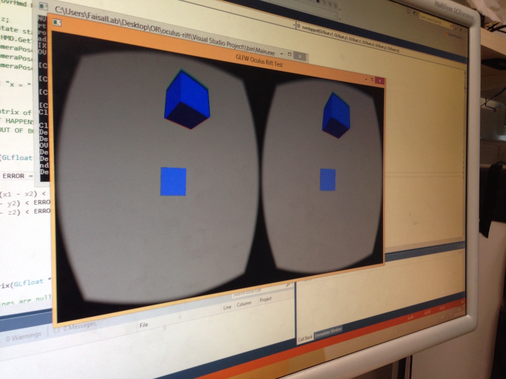

MIND EXPLORER
MSc Individual Project - Demonstration iPad App for Spatial Indexing in Neuroscience:
Built from the ground-up, an iPad app to visualise a 3D neocortex model to allow for quick, efficient ad-hoc analysis.
Written using Swift and Metal (the latest iOS programming languages, replacements for Objective-C and Open GL ES, respectively) as well as C++.
Users can view and manipulate the 3D neocortex model using standard touch screen gestures to translate, rotate and zoom.
After defining a range query on the model, the app uses the sophisticated FLAT spatial indexing algorithm to render the portion of the model as a highly detailed triangular mesh.
Using a novel graph algorithm, the app allows users to visualise messages propagating throughout the neural network.
Mind Explorer is now in use among the Neuroscience department of Imperial College, London.
For the elements of the source code (aside from the proprietary underlying dataset), visit GitHub.
To view a video demonstration of the app, visit YouTube.

EMBODIED VIRTUAL REALITY FOR THE OCULUS RIFT
MSc Group Project:
This MSc Group Project involved the development of a system for the veridical representation of a user's hands and limbs in a virtual reality environment using motion tracking.
Developed novel solutions for interprocess communication between different hardware systems.
Built using C++, OpenGL and the Oculus Rift development environment.
Worked as a team using an agile methodology for development.
For a video demo, head over to YouTube.
BLACKJACK ODDS
This command line program, written in Python, allows the user to either:
- play a game of blackjack against the computer, choosing when to stick or hit manually
- choose a strategy for the player and automatically run a given number of games and analyse the results
The user is asked:
- What is their strategy. Can be either "Manual", "Soft 16-18" or "Hard 16-18" (e.g. input "Soft 16")
- How much the user wants to bet each hand
- What the multiplier for blackjack wins is (e.g. 1.5)
- Whether the dealer should stand on a soft 17 or hard 17 (varies by casino)
- If the user's strategy is not "Manual" then the user inputs how many hands they wish to play and whether they want to see details of each hand
At the end, the program outputs the total number of wins, losses, draws and blackjack wins, along with the win rate (as a percentage) and the total monetary winnings or losses.
The program can also be used to run a large number of games across a variety of strategies and analyse the results.
The source code for this project can be found on GitHub.
THE MONTY HALL PROBLEM
I wrote this Python console application to explore the probability behind the so called Monty Hall problem (ref). There are a set number of doors. Behind one is a prize. The player selects one door. The computer then randomly opens a given number of doors. The player can then choose to switch to the other unopened door or stick with their initial choice. Probability dictates that the player should always switch, this program verifies that.
The user can input the number of doors, the number of doors that the computer opens and the number of rounds that can be played. The user then decides if the game should be played automatically or manually. If the game is played automatically, the user is then asked whether the computer should always switch or always stick.
According to D. L. Ferguson (1975 in a letter to Selvin cited in (Selvin 1975b)), given an N-door problem, with the computer opening P wrong doors, the probability of winning if the user switches is:
(N - 1) / (N(N-P-1))
This formula is tested if the game is played automatically.
The source code for this project can be found at GitHub.